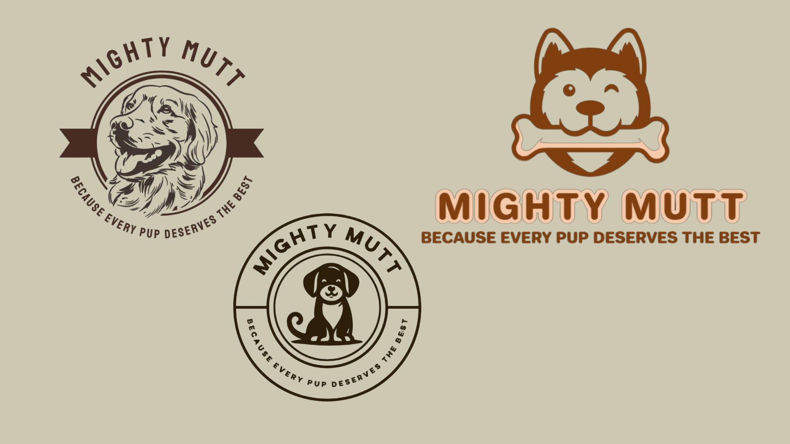
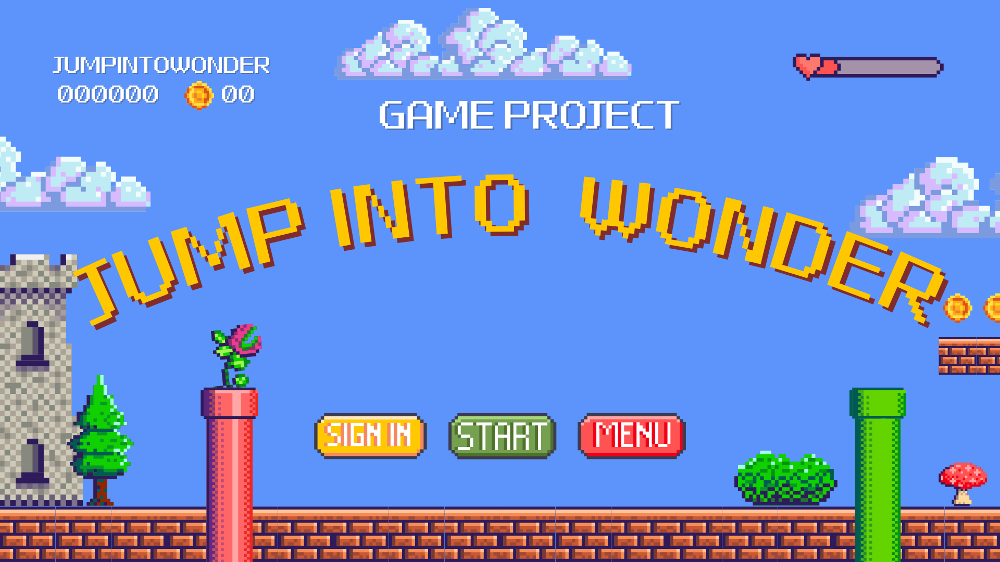
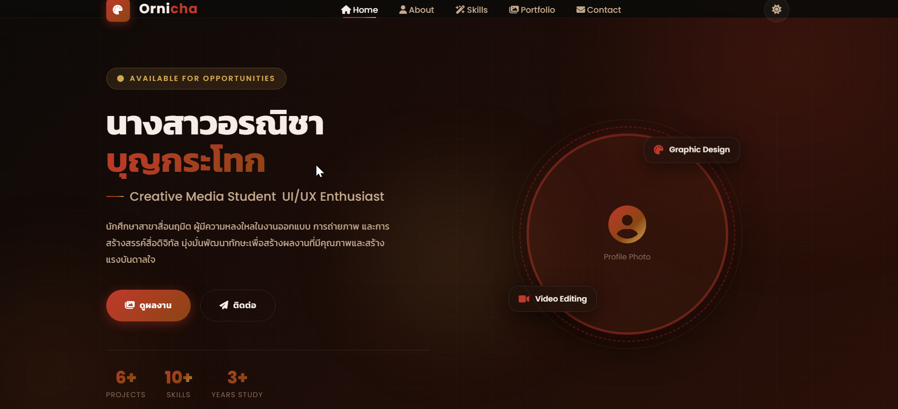
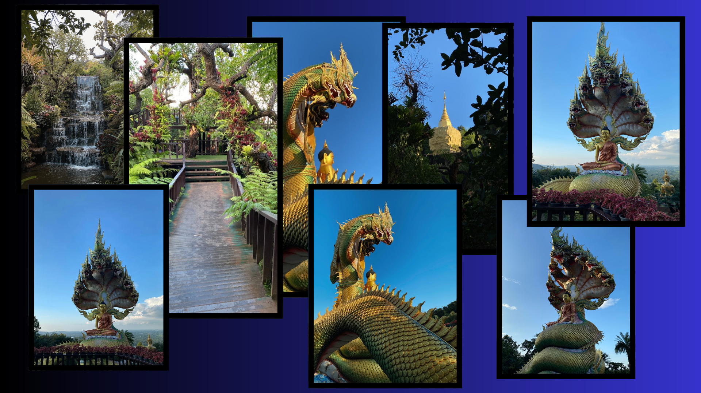
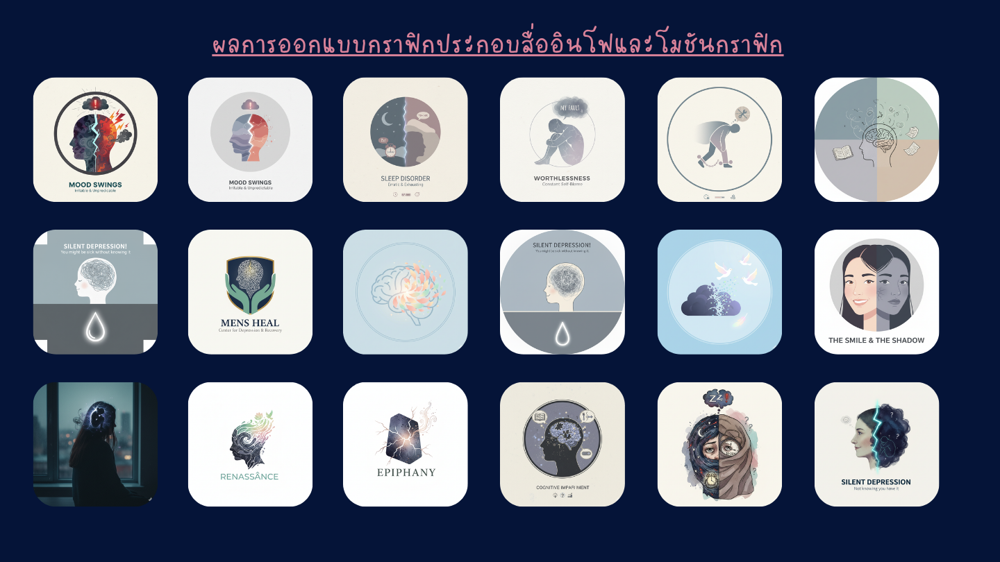

03 / Portfolio
Selected work
A simple collection of example work. Edit titles, descriptions, images, and links in assets/content.js.

02
Application UI
Screen flows and interface design that feels clear, friendly, and useful.
View project ↗



06
Creative Exploration
Small experiments for building skills and finding new directions.
View project ↗